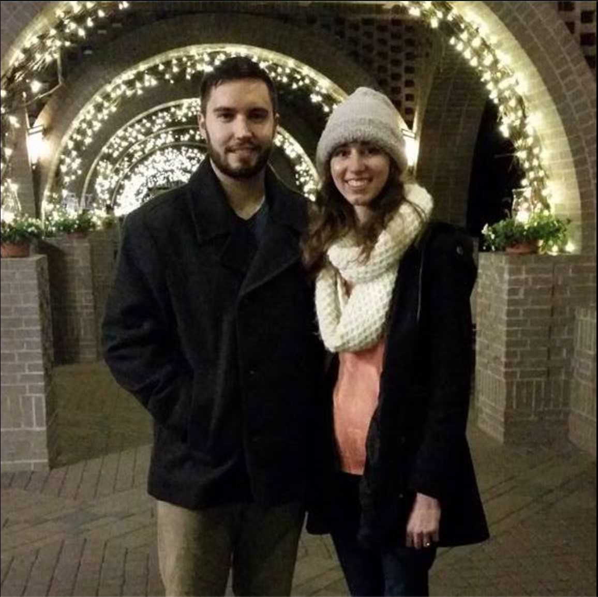
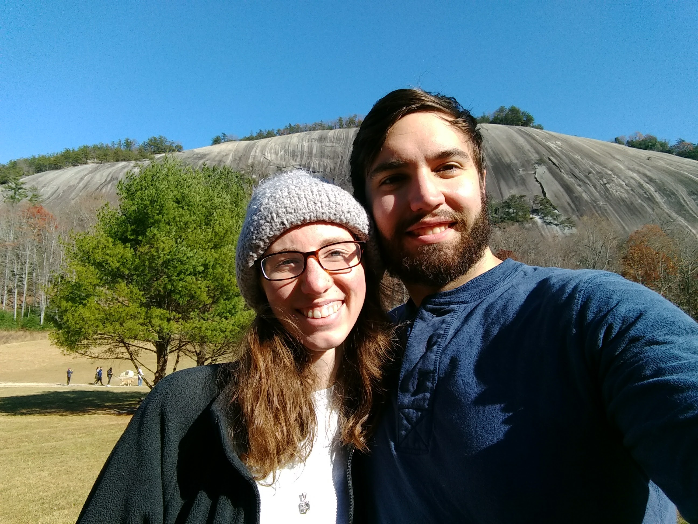
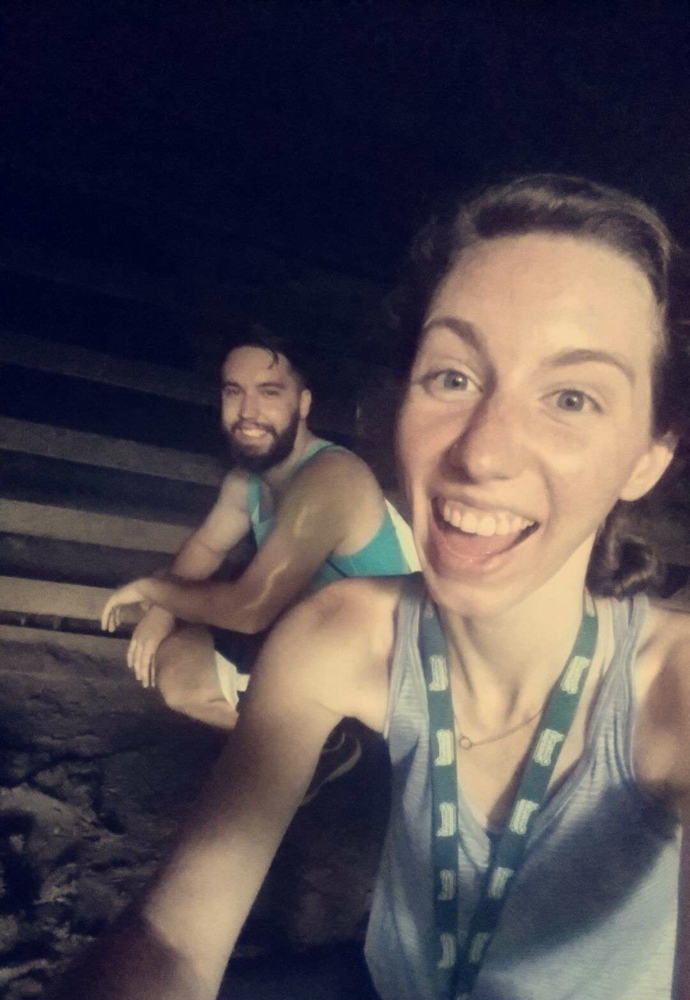
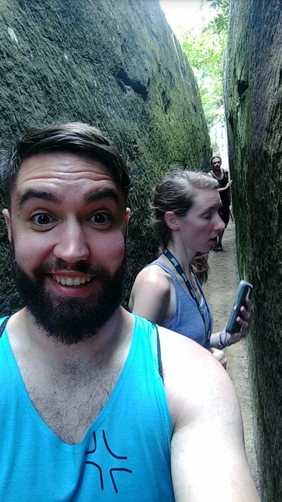
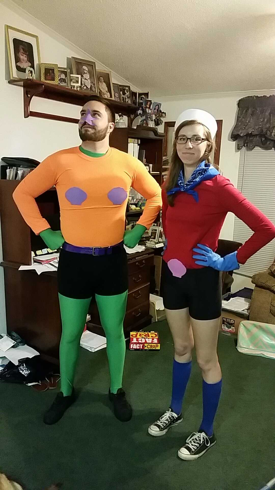
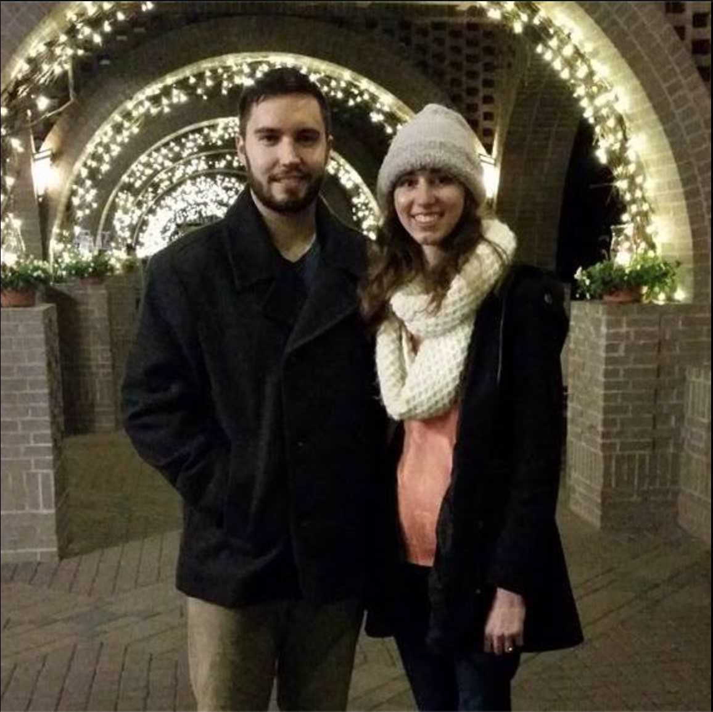
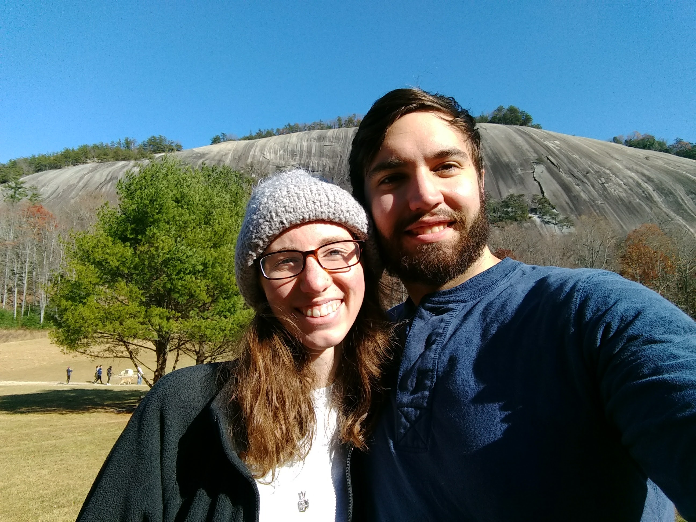
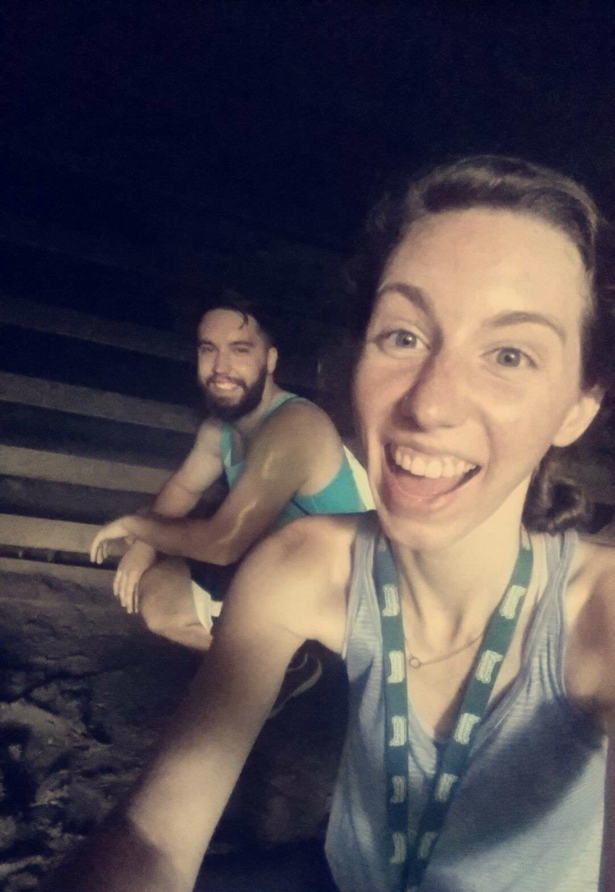
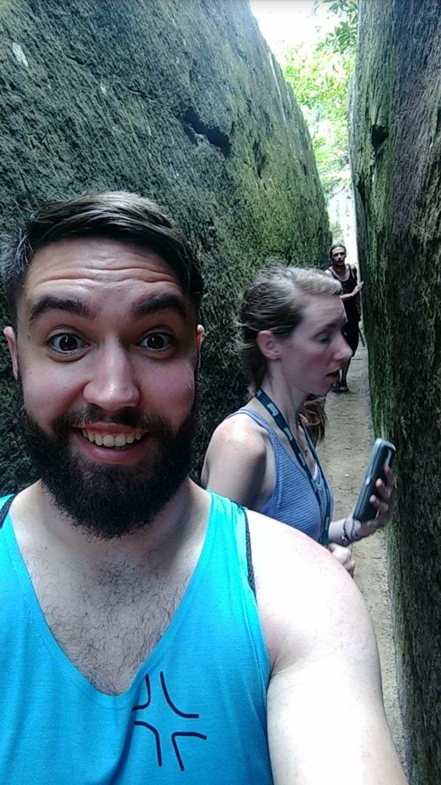
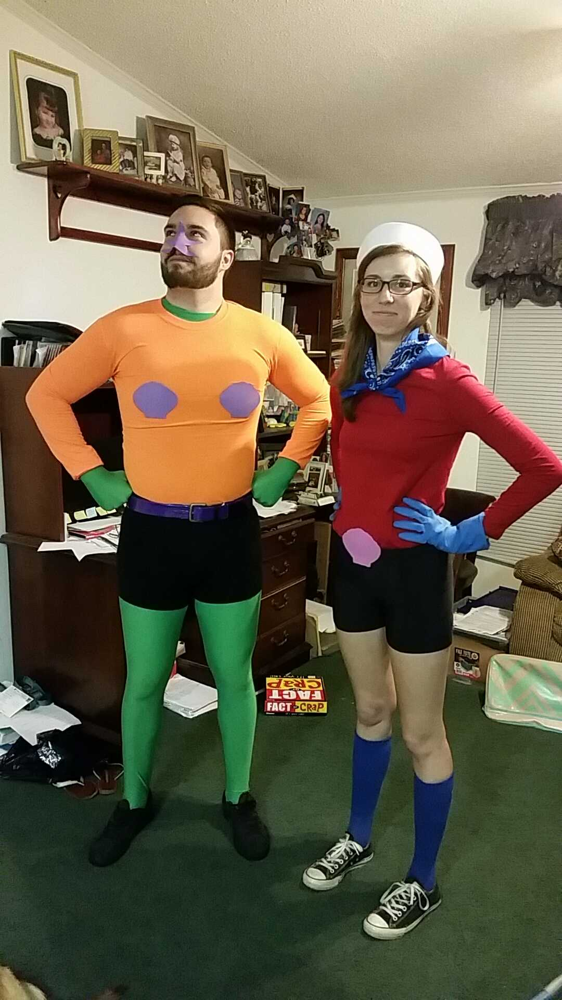

About Me
My favorite game is Skyrim, I enjoy a good IPA, I proposed during the 2017 Solar Eclipse, I love playing Dungeons and Dragons, my favorite place to hike is the mountains of North Carolina.
 









Understanding who I am as a person
My path to a BA in Computational Science has stoked a passion in me for all forms of software development, from web design to visualizing stress on an object. Though a great deal of my time is spent behind a computer monitor, I enjoy getting away and finding new mountain trails to explore or a stretch of river to canoe. I have also recently discovered a love for playing Dungeons and Dragons and immersing myself in a grand fantasy.
My first few years of college, I was so uncertain of my future and decisions. I began pursuit of a Bachelors of Science in Applied Mathematics at Coastal Carolina University, but did not have a real love for the subject. Following family to Beaufort, South Carolina, I began looking into the University of South Carolina Beaufort and found myself at the desk of the Dr. Yimming Ji, the head of the Computational Science department. My conversation with him that day turned me down a path towards a meaningful and exciting degree. I have found a love for Computational Science and will do whatever it takes to further my career in this field.